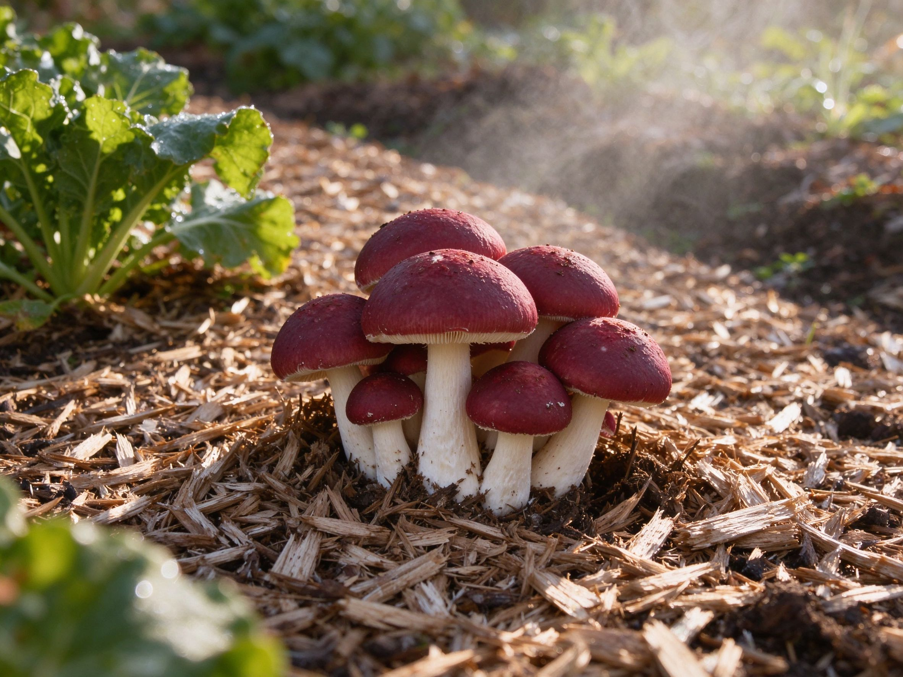

Growing Wine Cap Mushrooms in Your Garden Beds
Most mushroom kits are a houseplant with a short life: a block of sawdust, a flush or two, then done. Wine caps are different. Inoculate a bed of wood chips outdoors and the mycelium moves into the soil, spreads under your mulch, and fruits every year in the same beds — for the price of a bag of spawn and the wood chips you were going to spread anyway.
Why Wine Caps and Not Something Else
Stropharia rugosoannulata is a primary decomposer: it eats fresh wood chips, which almost nothing else in a garden will. That makes it the most forgiving outdoor mushroom for a beginner. It tolerates sun, dry spells and being walked on; it fruits in beds, under shrubs, along paths and between vegetables. It also has a genuinely good table reputation — a firm, nutty mushroom that holds its shape in a pan.
Other outdoor candidates (oyster, shiitake, lion's mane) need logs, stumps or bags and much more careful moisture. Wine caps are the entry point.
What You Need
- Wood chips — hardwood chips, fresh or partly aged. Avoid chips from treated timber, and avoid pure sawdust, which compacts.
- Spawn — a reputable supplier's grain or sawdust spawn, not "mushroom growing soil" from a garden centre. Roughly 1 lb of spawn per 5 square feet of bed, or about 10–20% of the wood-chip volume.
- Shade — dappled or half-day shade is ideal; full sun dries a bed out and full deep shade keeps it too cold to fruit.
- Water — a hose, and the willingness to water a bed that isn't producing vegetables yet.
Build the Bed
- Pick a spot that stays damp — beside a fence, under a fruit tree, along a shaded path, or the mulched strip between raised beds.
- Loosen the soil a few inches deep so water can drain and mycelium can move down. Wine caps don't need rich soil; they need air and moisture.
- Layer chips and spawn. Two inches of chips, a sprinkle of spawn, two more inches of chips, another sprinkle, and finish with three to four inches of chips. Thin layers matter — spawn buried in a deep mound runs out of oxygen.
- Water it in until the chips are damp all the way through, not soaked. Think wrung-out sponge, not puddle.
- Top with a little straw or leaves to hold moisture, and water when the top inch dries out. In a normal wet autumn, that's rarely.
What Happens, Month by Month
- First 2–6 weeks: white mycelium threads through the chips. Lift a chip and look — you should see fine white fuzz.
- 6–12 weeks, warm weather: the first flush. Wine caps appear fast, often overnight, in clusters. Caps start deep burgundy and fade to tan as they open.
- Year 1: two to four flushes, mostly spring and autumn.
- Year 2–4: the patch spreads outward into surrounding mulch and may fruit in places you didn't inoculate. That's the point — treat it as a slow-moving soil organism, not a crop row.
- When it slows down: top up with fresh chips and a little new spawn. A bed can keep going for years this way.
Harvesting
Pick while the cap is still rounded and the veil under it is intact — that's when the texture is firm. Once the cap flattens completely and the gills go purple-black, the mushroom is still edible but soft and short-lived. Cut at the base or twist gently; don't pull, or you'll tear the mycelium mat.
Use them the same day if you can. Wine caps keep in a paper bag in the fridge for a few days, no longer. Cook them thoroughly. Like most cultivated mushrooms, they should not be eaten raw, and anyone trying a mushroom for the first time should start with a small portion.
Identification Discipline
A wine cap has a burgundy-to-tan cap, a thick white stem with a distinctive ring, and greyish gills that darken to purple-brown. It grows from wood chips, not from soil alone. Those features are clear — but the rule still holds: if you are not certain, don't eat it. Never eat a mushroom you found growing near a patch you didn't inoculate unless someone experienced has identified it. Growing your own removes the guesswork; foraging does not.
Mistakes That Kill a Patch
- Using sawdust or compost instead of chips. The mycelium suffocates or gets out-competed.
- Letting the bed dry out in summer. Wine caps survive dry spells but won't fruit. Water deeply once a week in hot weather.
- Digging the chips into the soil. Keep the wood-chip layer on top. Buried chips starve the mycelium of air, and they also tie up nitrogen where roots are trying to grow.
- Expecting a harvest in three weeks. Patches are slow. The first flush often comes two to three months after inoculation, and the best years are the second and third.
- Buying cheap, unlabelled spawn. You cannot verify species from a bag of white fuzz. Pay for a named cultivar from a specialist.
- Spreading chips right against stems. A thick fresh-chip mulch at the base of young annuals can temporarily tie up nitrogen. Keep it a few inches back from seedlings, or use the mushroom bed as a separate strip.
This is the rare garden project where the work is front-loaded: an afternoon of layering chips, then years of mushrooms appearing after rain. It pairs naturally with no-till beds and a leaf mold habit — the same logic of feeding fungi instead of fighting them.